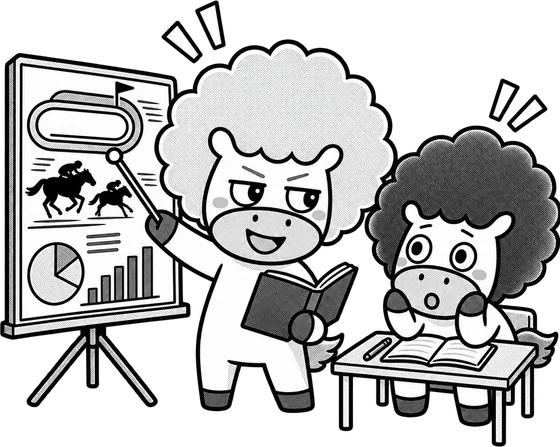

競馬、やってみたいけど何も分からん。

ほんなら順番に説明したる。全4回や。むずかしい話はせえへん。

全部読んでも30分くらい。1回ずつでも大丈夫だし、気になるところだけ読んでもいいよ。
全4回＋辞典。ぜんぶ無料、登録もいりません

競馬、やってみたいけど何も分からん。
ほんなら順番に説明したる。全4回や。むずかしい話はせえへん。
全部読んでも30分くらい。1回ずつでも大丈夫だし、気になるところだけ読んでもいいよ。

読んだだけでは身につかん。実際に触ってみろ。金はかからん。
馬券を買えるのは20歳からです。買ったお金がすべて払い戻しに回るわけではなく、 種類によっておおむね70〜80%が払戻に充てられます。 使ってもいい金額をあらかじめ決めて、その中で遊ぶのがいちばんです。
つらくなったときは、JRAの 安心して楽しむために に相談窓口の案内があります。